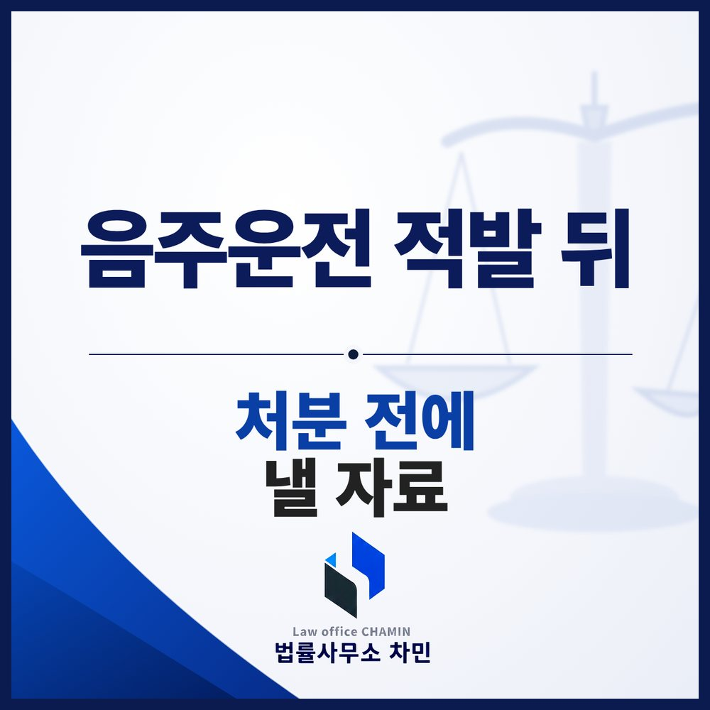

핵심 답변
음주운전은 현장에서 수치가 나온 자백 사건이 대부분이라, 경찰 조사에서 무엇을 말하느냐보다 송치 뒤 공소청 검사가 기록만으로 처분하기 전에 어떤 자료를 내느냐가 결과를 좌우하는 경우가 많습니다. 조사를 마친 뒤에는 시간이 많지 않습니다.
단속 현장에서 수치가 나오면 대리운전으로 귀가하고, 며칠 뒤 경찰서에 출석해 조사를 받습니다. 많은 분이 이 조사를 가장 큰 고비로 여기지만, 실제로 처분을 가르는 시점은 그 뒤에 옵니다. 적발부터 처분까지의 순서와 각 단계에서 할 일을 정리합니다.

적발 직후 — 호흡측정과 혈액 채취
경찰공무원은 술에 취한 상태로 운전했다고 볼 상당한 이유가 있으면 호흡조사로 측정할 수 있고, 운전자는 이에 응해야 합니다(도로교통법 제44조 제2항). 호흡측정 결과에 불복하면 운전자의 동의를 받아 혈액 채취 등으로 다시 측정할 수 있습니다(같은 조 제3항). 채혈은 시간이 지난 뒤 이뤄지므로 결과가 호흡측정보다 낮게 나오리라고 단정할 수 없고, 오히려 높게 나오는 경우도 있습니다. 채혈 여부는 단속 시점과 마지막 음주 시점, 운전 경위를 생각해 신중히 정해야 합니다.
귀가 후 — 출석, 송치, 기록 처분
- 경찰 출석: 단속 뒤 출석 요구를 받아 피의자신문을 받습니다. 음주 경위, 운전 거리와 장소, 동승자 여부 등을 묻습니다.
- 송치: 경찰은 수사를 마치면 사건을 대전지방공소청 논산지청으로 보냅니다.
- 처분: 공소청 검사는 혐의를 다투지 않는 음주운전 사건에서 피의자를 따로 부르지 않고 기록만 보고 처분하는 경우가 많습니다. 재판 없이 벌금으로 끝내는 약식명령 청구(구약식)를 할지, 법정에 세우는 정식 기소(구공판)를 할지가 이때 정해집니다.
그래서 경찰 조사를 마친 뒤에는 생각보다 시간이 짧습니다. 송치 직후 처분이 나올 수도 있으므로, 처분에 반영되기를 바라는 자료는 조사 무렵부터 준비해 두는 것이 좋습니다.
수치별 법정형
| 혈중알코올농도 | 법정형(도로교통법 제148조의2 제3항) |
|---|---|
| 0.03% 이상 0.08% 미만 | 1년 이하 징역 또는 500만 원 이하 벌금 |
| 0.08% 이상 0.2% 미만 | 1년 이상 2년 이하 징역 또는 500만 원 이상 1천만 원 이하 벌금 |
| 0.2% 이상 | 2년 이상 5년 이하 징역 또는 1천만 원 이상 2천만 원 이하 벌금 |
벌금 이상의 형이 확정된 날부터 10년 안에 다시 적발되면 같은 조 제1항의 가중 구간이 적용됩니다. 운전면허는 형사 절차와 별도로 0.03% 이상이면 정지, 0.08% 이상이면 취소 처분 대상이 됩니다.
조사 답변보다 처분 전 자료가 무거운 이유
음주운전은 현장에서 적발되고 수치까지 나오기 때문에 혐의를 부인할 여지가 적습니다. 운전하지 않았다고 다투는 예외적인 사건이 아니라면 수사기관이 진술 하나하나의 진위를 따로 확인하는 일도 드뭅니다. 조사에서는 기억나는 대로 사실대로 답하되 불리하다고 운전 거리나 음주량을 줄여 말하지 않는 것이 원칙이고, 그 이상으로 조사 답변을 다듬는 데 시간을 쓰기보다 처분 단계에 반영될 자료를 갖추는 편이 실익이 큽니다.
- 의견서: 운전에 이른 경위, 운전 거리와 시간대, 사고 여부, 직업과 생계에 미치는 영향, 재발 방지를 위해 실제로 한 일을 사실과 자료 중심으로 정리합니다.
- 행동으로 보이는 자료: 차량 처분이나 운전 중단을 보여 주는 서류, 음주 관련 교육·상담 이수 기록, 진료 기록처럼 반성문 문장보다 확인할 수 있는 자료가 설득력을 갖습니다.
- 반성문·탄원서: 누구나 내는 자료라 형식적인 문장만으로는 무게가 크지 않습니다. 쓴다면 구체적인 사정과 달라진 생활을 담아야 합니다.
약식명령을 받은 뒤의 정식재판 청구와 면허 처분 불복은 약식명령 이후 칼럼에서, 재범 사건은 재범 칼럼에서 다뤘습니다.
부여에서 음주운전으로 조사받는다면
부여군에서 생긴 사건은 부여경찰서가 수사하고, 송치되면 대전지방공소청 논산지청이 처분하며, 재판은 대전지방법원 논산지원에서 열립니다. 경찰 조사 뒤 처분까지 남은 시간이 짧을 수 있으니, 출석 전에 부여음주운전변호사와 처분 단계에 낼 자료부터 점검하세요.